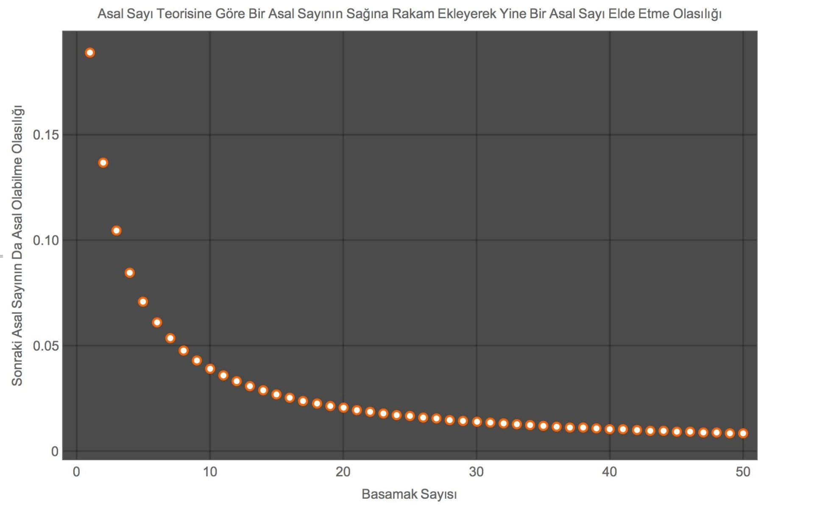
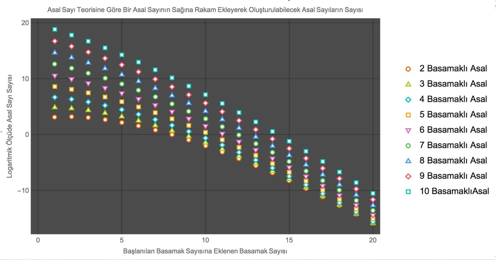
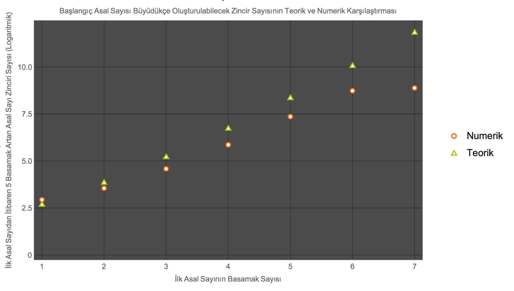

A basamaklı bir asal sayıdan başlayayım, bu asal sayının bir ucuna (örneğin sağına) rakamlar ekleyerek ne kadar asal sayı elde etmeye devam edebilirim?
Örneğin 84121 ile başlarsam, sağına ekleye ekleye sırayla 841213, 8412139, 84121393, 841213939 diye yazabilirim, bunların hepsi de asal sayı.
Peki rastgele bir asal sayıdan başlayınca ne kadar bunu devam ettirebilirim?
İlk başladığım asal sayı ne kadar büyükse, o kadar uzun bir asal sayı zinciri yapabilirim. Fakat ilk başladığım asal sayı ne kadar büyük olursa olsun, asal sayı zincirim sonlu olmak zorunda.
Öncelikle şunu belirteyim, ben matematiksel olarak herhangi bir ispat yapmayacağım, sadece "Asal Sayı Teoremi"ni ve Mathematica’yı kullanarak a basamaklı bir asal sayıdan bu şekilde b basamaklı bir asal sayıya giden kaç tane asal sayı zinciri oluşturulabilir onu inceleyeceğim.
Ekteki birinci resimden de görülebileceği gibi basamak sayısı arttıkça sağına rakam yazıldığında oluşacak sayının asal olabilme olasılığı giderek düşüyor. Fakat bu olasılığın düşmesi tek başına yeterli değil, çünkü basamak arttıkça asal sayısı da artıyor.
Bu iki değişkenin (yani asal sayı sayısının artmasının ve asal sayı oluşturma olasılığının azalmasının) birleşik etkisini ikinci resimde görüyoruz: Ne kadar büyük basamaklı bir asal sayıdan başlarsak, o kadar çok asal sayı bulabiliyoruz ve asal sayı zincir sayımız da çok. Fakat zinciri uzatmaya kalktıkça (yatay eksende ilerledikçe) oluşturabileceğimiz zincir sayısı düşüyor. Bu teorik hesaba göre 10 basamaklı bir asal sayıdan başlarsak, 25 basamaklı bir asal sayıya kadar zincir yapabileceğimiz sonucuna varabiliriz, fakat daha uzun bir zincir oluşturabilme olasılığımız hızla sıfıra gidiyor.
Öncelikle bu teorik bir hesaplama ve olasılığa dayalı. Yani aşırı düşük de olsa 10 basamaktan başlayıp 100 basamağa kadar giden bir asal sayı zinciri olabilir. Fakat şunu net olarak söyleyebiliriz ki sonsuza kadar giden bir asal sayı zinciri olamaz, çünkü sonlu bütün zincirler için olasılık sıfırdan farklı olsa da sonsuza götürdüğümüzde olasılık sıfıra gidiyor.
Bu teorik sonucu pratik bir hesaplamayla da test edebiliriz. Mathematica’ya her basamakta en fazla 1 milyon tane farklı asal sayı üretip bunlardan kaç tane asal sayı zinciri oluşturulabileceğini hesaplattım. Buradan elde edilen sonucu da teoriyle kıyasladım, sonuç üçüncü grafikte. Görülebileceği gibi pratik ve teori oldukça uyumlu. İlk başlardaki sonuçlar için Mathematica teoriden daha güvenilir çünkü teori büyük sayılar için daha geçerli. Sayı büyüdükçeyse teori daha güvenilir, çünkü Mathematica en fazla 1 milyon asal sayıdan asal sayı zinciri oluşturmaya çalıştığı için daha büyük asal sayılarda bazı olası zincirleri kaçırmaya başlıyor.
asalSayıTeoremi[x_] :=Round[10^x/Log[10^x] - 10^(x - 1)/Log[10^(x - 1)]];
sonrakininAsalOlmaOlasılığı[x_] := numberOfPrimesForGivenLength[x + 1]/(10^(x + 1) - 10^x);
aBasamaklıAsaldanBBasamağaGidenAsalSayısıTeori[a_, b_] :=N[asalSayıTeoremi[
a] Product[(10 sonrakininAsalOlmaOlasılığı[i]), {i, a, b - 1}]];
sayıOluştur[x_] := FromDigits[{x, #}] & /@ Range[9];
SetAttributes[sayıOluştur, Listable];
asalOlmayanıEle[x_] := If[PrimeQ[x], x, Nothing];
SetAttributes[asalOlmayanıEle, Listable];
sonrakiBasamağaGeç[x_] := asalOlmayanıEle[Flatten[sayıOluştur[x]]];
asalSayıOluştur[x_, n_] := Union[RandomPrime[{10^(x - 1), 10^x}, n]]
aBasamaklıAsaldanBBasamağaGidenAsalSayısıPratik[a_, b_,
denemeSayısı_] :=
Length[With[{c = asalSayıOluştur[a, denemeSayısı]},
Nest[sonrakiBasamağaGeç, c, b - a]]]


